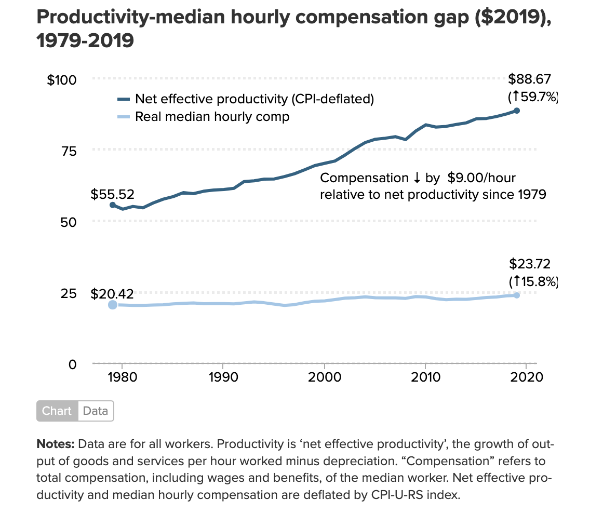

Labor Productivity vs. Real Minimum Wages: A Multinational Analysis
Introduction & Motivation
There has been much discussion in recent years about income inequality in the United States. Americans have witnessed the continued rise of CEO wages at the expense of wage increases for ordinary workers. An integral component underpinning this discussion is the relationship between worker productivity and worker income. In 2021, the Economic Policy Institute published a report detailing how worker productivity has grown at 3.5 times the rate of pay for Americans since 19791. In this article, author Lawrence Mishel surmises that this divergence between worker productivity and compensation indicates that a concerted effort has been “engineered by those with the most wealth and power.” Documented by Mishel and Bivens in 20212, suppression of wages in the United States was generated by policy choices that have resulted in declining unionization rates, excess unemployment, corporate globalization, and lower minimum wages.
While this phenomenon is a known fact in the US, is it also occurring in other developed nations? In this analysis, we will attempt to answer this question by visualizing the relationship between real minimum wages and hourly labor productivity over time in the US and other developed nations. Analyses will be conducted using data from the Banque de France3 and the Organization for Economic Co-operation and Development (OECD) 4.

Methods
Analyses were conducted using data from the Banque de France and the OECD. The Banque de France dataset includes yearly data on labor productivity, total factor productivity, capital intensity, gross domestic product (GDP) per capita, and the average age of equipment capital stock for 23 developed nations. The data containing real minimum wages at constant prices comes from the OECD. This dataset includes minimum wage information beginning as early as 1960 from nations that are OECD members.
This data was downloaded from their respective sources and read into R as Excel files, in the case of the Banque de France dataset, and CSV files in the case of the OECD dataset.
The main analysis of this report centered around tracking real minimum wages relative to worker productivity since 1960. From the Consumer Price Index (CPI) inflation index, converting 2021 USD purchasing power parity (PPP) units to 2010 USD PPP units can be done with a factor of about 0.8284. This was done to convert real hourly minimum wages from 2021 PPP to 2010 PPP for ease of comparison to labor productivity, which is already measured in 2010 PPP per hour worked. According to the OECD5, purchasing power parity units “are the rates of currency conversion that equalize the purchasing power of different currencies by eliminating the differences in price levels between countries. In their simplest form, PPPs are simply price relatives that show the ratio of the prices in national currencies of the same good or service in different countries. PPPs are also calculated for product groups and for each of the various levels of aggregation up to and including GDP.” Both the labor productivity data from the Banque de France and the real minimum wage data from the OECD were then pivoted into a long format, with columns denoting nation, year, and the corresponding labor productivity and real minimum wage values. These two data frames were then joined via the inner_join R function, keeping only the labor productivity observations that have a corresponding real minimum wage observation. After joining the data in this way, 16 nations remained for the analysis of minimum wage relative to worker productivity from 1960 to 2022.
- These nations include:
- Australia (AUS)
- Belgium (BEL)
- Canada (CAN)
- Chile (CHE)
- Germany (DEU)
- Spain (ESP)
- France (FRA)
- Great Britain (GBR)
- Greece (GRC)
- Ireland (IRL)
- Japan (JPN)
- Mexico (MEX)
- Netherlands (NLD)
- New Zealand (NZL)
- Portugal (PRT)
- United States of America (USA)
- Australia (AUS)
Data visualizations were then made for each nation, with trend lines for both hourly labor productivity (2010 USD PPP) and real hourly minimum wages (2010 USD PPP).
An additional visualization employs a line plot of the ratio of hourly real minimum wage to hourly labor productivity for each of the 16 nations.
Another visualization is an animated GIF which is a scatterplot that plots minimum wage against hourly labor productivity for each of the 16 nations from 1960-2022. The visualization also features a least squares regression line to denote the linear relationship between hourly productivity and minimum wage.
Taking the final frame from the GIF, we also visualize this trend for just the year 2022 to better understand how the nations compare in the most recent year for which there’s data.
All plots were made with the ggplot R package.
A table was also made to highlight the real minimum wage to hourly labor productivity ratio for each country in the year 2022.
Results
Figure 1
This plot, which is faceted by country, plots the trend line for labor productivity (measured in USD 2010 PPP) along with the trend line for real minimum wage (also measured in USD 2010 PPP via conversion from USD 2021 PPP). From this plot, one can see how in certain countries, such as New Zealand and Great Britain, the slopes for productivity and minimum wage appear similar. However, in other nations such as in Belgium and the USA, worker productivity has increased over time while the minimum wage has stagnated.
Figure 2

Overall, this graph is especially helpful in elucidating whether other nations are, as in the USA, seeing a similar decline in the hourly wages of a minimum wage worker relative to productivity. Further, by comparing hourly worker productivity to real minimum wages in particular (this data also happens to be more readily available compared to median hourly wages or hourly wages of a “typical worker” in various countries), we are able to analyze a policy choice (lower labor standards) that Mishel and Bivens have shown to contribute to wage suppression. A particular example of lower labor standards that they outline is lower minimum wage. Michel and Bivens assert that this is a key policy choice in the USA that has driven down the wages of the “typical worker” to the benefit of large firms.
By comparing the ratio of hourly real minimum wage to hourly labor productivity, changes between the two measures become even more apparent than in Figure 1 above. One may observe a clear and drastic downwards trend in this ratio between 1960 and 2022 in countries such as the Netherlands, Greece, and the USA. Similar trends are also observed in countries who began reporting data in later years, such as in Australia, Belgium, and Ireland.
This graph also reveals nations where the ratio between real hourly minimum wage and hourly labor productivity has actually consistently grown. Such a trend has been observed in New Zealand and Great Britain since about 2000.
Figure 3

This animation takes a cross section of the data at each year and fits a least squares regression line with hourly labor productivity as the predictor and minimum wage as the response variable. The animation begins with the first year for which there is any data, which is 1960, and adds more countries as they begin to report their wage and productivity data. Generally, one can notice a flattening of the curve over time, indicating that over the years, minimum wage has not risen as rapidly with productivity as it once did. Watching particular countries during each playthrough of the animation helps one realize trends over time for particular countries. For example, up until the early 2000s, the USA was very close to the trendline and at one point in time led all of the selected nations in real minimum wage. Beginning in the early 2000’s the US has fallen well below the trendline, having a low real minimum wage in spite of its high hourly productivity. Other nations, such as Mexico and Chile enter the picture in the late 1980s and show little movement up until 2022. Both of these nations have maintained low hourly productivity and a low minimum wages up until the present.
Another interesting nation to watch is Belgium, which, as we saw in Figure 2, has had a declining minimum wage to productivity ratio over time. This is shown in Figure 3, as we see the nation enter the picture in the 70s, quickly surpassing a real minimum wage of $10 (2010 PPP). Over time, the real minimum wage has stagnated, while the hourly labor productivity has continued to increase. So, this figure helps us better understand the mechanism through which the ratios have fallen in various nations. In the USA, the decline in minimum wage to hourly productivity ratio is due to a combination of increasing labor productivity and a decreasing real minimum wage in recent years. At one point the USA had a minimum wage of over $10 (2010 PPP), in 2022 it was $6.01 (2010 PPP).
Figure 4

Taking a cross section of the most recent year’s (2022) data, we plot each of the 16 nations’ real minimum wage against its hourly productivity in 2010 USD PPP. From the graph, we see that despite having the second highest productivity of the 16 nations in 2022, the USA comes in 13th in terms of real hourly minimum wage. This graph also reveals that the USA has a lower real minimum wage than Portugal, a nation with just over half as much hourly productivity as the USA. Further, Ireland shows itself to be a significant outlier, with extremely high hourly productivity, but lower real minimum wages compared to other European nations such as Great Britain and the Netherlands.
Table 1
| Country | Ratio |
|---|---|
| New Zealand | 0.247 |
| Australia | 0.196 |
| Spain | 0.178 |
| France | 0.174 |
| Great Britain | 0.166 |
| Canada | 0.165 |
| Germany | 0.161 |
| Greece | 0.159 |
| Belgium | 0.152 |
| Portugal | 0.148 |
| Netherlands | 0.143 |
| Japan | 0.141 |
| Chile | 0.108 |
| United States | 0.081 |
| Mexico | 0.079 |
| Ireland | 0.060 |
Nations such as the Australia, Belgium, and the Netherlands, which have seen a decline in the ratio of real hourly minimum wage to hourly labor productivity in recent years, all still possess better ratios than Japan, Chile, the United States, Mexico, and Ireland, which make up the bottom 5.
Conclusion
We have now answered the question of whether a trend that we are seeing in the USA, a decline in wages relative to productivity, holds true in other nations. We’ve definitively determined that, with respect to the minimum wage, this trend is occurring in other developed nations. We have observed a continual decrease in the real minimum wage to hourly labor productivity ratio in not only the USA, but also in Australia, Belgium, Greece, Ireland, and the Netherlands. Nations such as Canada, France, Japan, New Zealand, and Portugal all have more nuanced trendlines, but still have a smaller real minimum wage to hourly labor productivity ratio than they did when data was first collected for these nations. In fact, of the 16 nations studied, 12 nations have a smaller real minimum wage to hourly labor productivity than they did when data was first collected.
Due to certain characteristics of the data, (such as its independent outcomes and longitudinal nature) as well as the realities of world economics (such as the strong interconnected relationships that the economies of nations have with one another), it was difficult to fit a model on this data. Future analysis should employ longitudinal methods to try to better understand the ongoing trend of declining wages relative to productivity that we’ve seen not only in the US, but in other developed nations. Future analysis should also attempt to include more nations, though such data has proven difficult to procure for non-OECD nations. Additionally, by employing longitudinal methods in future research, other important covariates mentioned by Mishel and Bivens, such as unionization rates and the presence of non-compete clauses in worker contracts, could potentially be accounted for in order to enhance our understanding of the relationship between labor productivity and wages.
Appendix: All code for this report
library(readxl)
file_path <- "BCLDatabase_online_v2.6.xlsx"
# Using readxl
sheet_names <- excel_sheets(file_path)
# Read each sheet into a list of data frames
tables <- lapply(sheet_names, function(sheet) {
read_excel(file_path, sheet = sheet)
})
library(dplyr)
# remove 25th column which is simply empty
GDP_per_cap <- tables[[2]] %>%
select(-c(25))
labor_prod <- tables[[3]] %>%
select(-c(25, 26)) %>%
rename(year = Year)
avg_equip_age <- tables[[5]] %>%
select(-c(25))
capital_intensity <- tables[[6]] %>%
select(-c(25))
min_wages_raw <- read.csv("minimum_wages.csv")
# multiply by factor of about 0.8284. This was done to convert real hourly minimum wages from 2021 PPP to 2010 PPP for ease of comparison to labor productivity, which is already measured in 2010 PPP per hour worked
min_wages <- min_wages_raw %>%
select(REF_AREA, TIME_PERIOD, OBS_VALUE) %>%
rename(country = REF_AREA, year = TIME_PERIOD, min_wage = OBS_VALUE) %>%
mutate(min_wage = min_wage*.8284)
library(tidyr)
# pivot labor productivity to long format
labor_prod_long <- pivot_longer(data = labor_prod, cols = -c("year"), names_to = "country", values_to = "hourly_prod")
# get labor productivity data for every year since 1960
labor_prod_1960 <- labor_prod_long %>%
filter(year >= 1960) %>%
mutate(year = as.numeric(year))
# inner join labor productivity data with minimum wage data
wages_prod <- inner_join(labor_prod_1960, min_wages, join_by(country, year)) %>%
mutate(ratio = min_wage / hourly_prod)
library(forcats)
library(ggplot2)
wages_prod_longer <- pivot_longer(wages_prod, cols = c(hourly_prod, min_wage), names_to = "type", values_to = "value") %>%
select(year, country, type, value) %>%
mutate(type = fct_recode(type, "Productivity" = "hourly_prod", "Minimum Wage" = "min_wage"))
wages_prod_longer %>%
ggplot(aes(year, value, color = type)) +
geom_line() +
facet_wrap(~country, scales = "free_y") +
labs(title = "Hourly Real Minimum Wage and Hourly Labor Productivity by Year", y = "USD (2010 PPP)", x = "Year", color = "Measure") +
theme(axis.text.x = element_text(size = 7))
# facet the hourly real minimum wage to hourly labor productivity ratio by country
wages_prod %>%
ggplot(aes(year, ratio, color = "red")) +
geom_line() +
facet_wrap(~country, scales = "free_y") +
labs(title = "Ratio of Hourly Real Minimum Wage to Hourly Labor Productivity", y = "Ratio (2010 USD PPP)", x = "Year") +
theme(legend.position = "none")
library(ggplot2)
library(gganimate)
library(broom)
library(dplyr)
library(ggrepel)
# Create the initial scatterplot with geom_smooth
p <- ggplot(wages_prod, aes(x = hourly_prod, y = min_wage, label = country)) +
geom_smooth(method = "lm", formula = y ~ x, se = FALSE, color = "darkblue", lty = "dashed", mapping = aes(group = year)) +
geom_point(size = 2) +
geom_text_repel() + # Add labels
labs(title = 'Year: {closest_state}',
subtitle = 'Scatterplot of Hourly Productivity vs. Minimum Wage with Regression Line', x = "Hourly Productivity (2010 USD PPP)", y = "Minimum Wage (2010 USD PPP)") +
theme_minimal()
# Use transition_states to create animation
animated_plot <- p + transition_states(year, transition_length = 2, state_length = 2, wrap = F)
# Render the animation
animate(animated_plot, nframes = 200, duration = 20, end_pause = 30)
library(ggrepel)
library(ggthemes)
r <- wages_prod %>% summarize(r = sum(min_wage) / sum(hourly_prod)) %>% pull(r)
wages_prod %>%
ungroup() %>%
filter(year == 2022) %>%
ggplot(aes(hourly_prod, min_wage, label = country)) +
geom_smooth(method = "lm", se = F, color = "darkblue", lty = "dashed") +
geom_point(size = 2) +
geom_text_repel() +
theme_minimal() +
labs(x = "Hourly Productivity (USD 2010 PPP)" , y = "Real Minimum Wage (USD 2010 PPP)", title = "Hourly Productivity vs. Real Minimum Wage (2022)") +
theme(axis.title.x = element_text(margin = margin(t = 10)),
axis.title.y = element_text(margin = margin(r = 10)),
plot.title = element_text(margin = margin(b = 20)),
plot.margin = margin(r = 20, t = 20, b = 20, l = 20))
# Ratio of real hourly minimum wage to hourly labor productivity for 2022 only
ratio_2022 <- wages_prod %>%
filter(year == 2022) %>%
arrange(desc(ratio)) %>%
select(country, ratio)
print(ratio_2022)Footnotes
https://www.epi.org/blog/growing-inequalities-reflecting-growing-employer-power-have-generated-a-productivity-pay-gap-since-1979-productivity-has-grown-3-5-times-as-much-as-pay-for-the-typical-worker/↩︎
https://www.epi.org/unequalpower/publications/wage-suppression-inequality/↩︎
http://longtermproductivity.com/download.html↩︎
https://data-explorer.oecd.org/vis?df[ds]=dsDisseminateFinalDMZ&df[id]=DSD_EARNINGS%40RMW&df[ag]=OECD.ELS.SAE&df[vs]=1.0&pd=1960%2C&dq=..USD_PPP.H…&ly[rw]=REF_AREA&ly[cl]=TIME_PERIOD&to[TIME_PERIOD]=false&vw=tb↩︎
https://www.oecd.org/sdd/prices-ppp/purchasingpowerparities-frequentlyaskedquestionsfaqs.htm↩︎